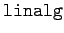
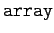
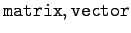
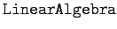
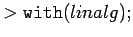
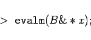

Inhalt Index DeskTop Bronstein

 Computeralgebrasysteme Maple Tabellen- und feldartige Strukturen, Vektoren und Matrizen
Computeralgebrasysteme Maple Tabellen- und feldartige Strukturen, Vektoren und Matrizen


Für Aufgaben der linearen Algebra stellt Maple zwei unterschiedliche Spezialpakete bereit. Das Paket  basiert auf der Grundstruktur  und stellt entsprechende Spezialkonstruktionen wie  und andere sowie entsprechende Operatoren bereit.
Das Paket  basiert auf der Array-Struktur, stellt Konstruktionen wie Matrix,Vector und eine große Anzahl spezieller Konstruktions- und Manipulationsvorschriften der linearen Algebra bereit.
| Beispiel |
|
Mit der Matrix B und dem Vektor X aus dem vorigen Beispiel wird nach dem Zuladen des Pakets linalg mit  
|